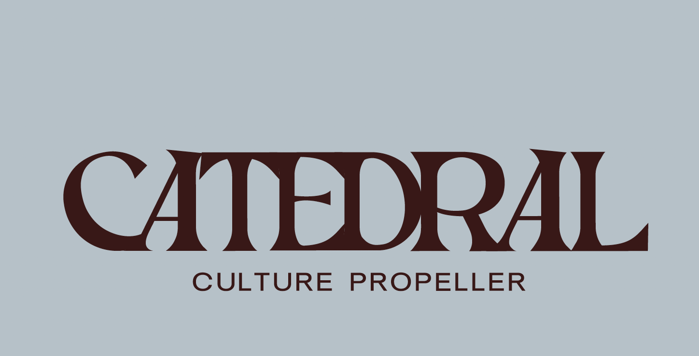

Bienvenido/a a CATEDRAL
Este formulario es su punto de entrada al ecosistema CATEDRAL. Nos permitirá conocer su proyecto, evaluar su
etapa de desarrollo, y determinar cómo podemos acompañarlo de la mejor manera.
This form is your entry point to the CATEDRAL ecosystem. It will allow us to learn about your project, assess your development stage, and determine how we can best support you.
This form is your entry point to the CATEDRAL ecosystem. It will allow us to learn about your project, assess your development stage, and determine how we can best support you.
✍️ Para obtener el mejor diagnóstico posible: en las preguntas de texto abierto, sea lo más exacto y descriptivo posible. Cuanto más detalle nos comparta sobre su proyecto, su contexto y sus metas, más preciso y útil será el análisis que recibirá.
✍️ To get the most accurate diagnosis: for open-ended questions, please be as specific and descriptive as possible. The more detail you share about your project, context, and goals, the more precise and useful your analysis will be.
✍️ To get the most accurate diagnosis: for open-ended questions, please be as specific and descriptive as possible. The more detail you share about your project, context, and goals, the more precise and useful your analysis will be.
⏱ Tiempo estimado: 15-30 minutos
🌐 Formulario bilingüe: Español / English
🔒 Sus respuestas son confidenciales
Estimated time: 15-30 min · Bilingual: ES/EN · Your answers are confidential
🌐 Formulario bilingüe: Español / English
🔒 Sus respuestas son confidenciales
Estimated time: 15-30 min · Bilingual: ES/EN · Your answers are confidential